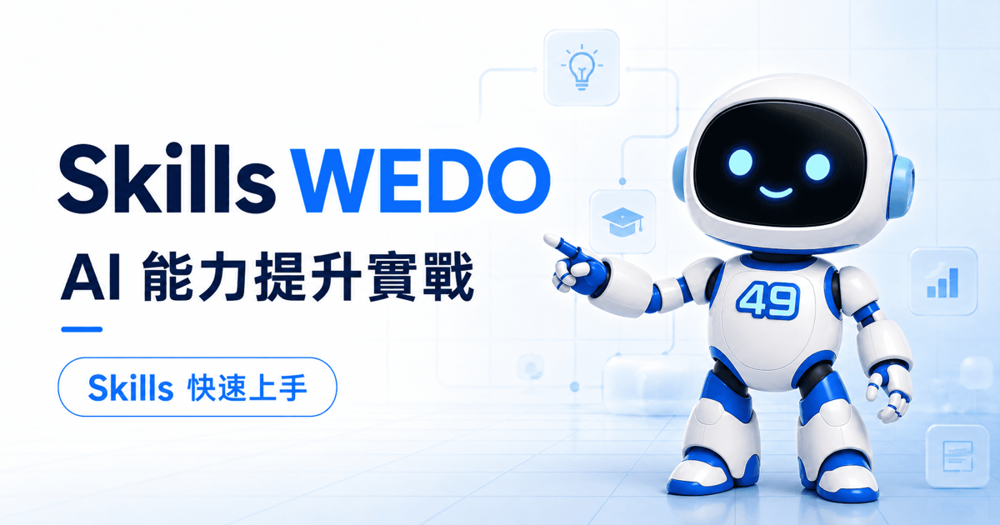
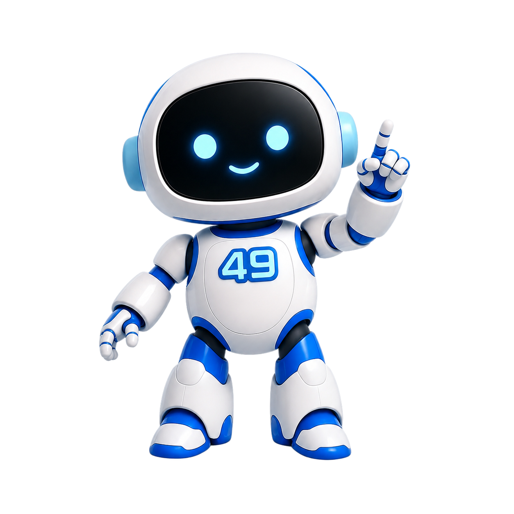

L.E.O.-49 樂奧帶路
Skills WEDO
AI 能力提升實戰與 Skills 快速上手
很多人第一次聽到 Skills，會以為那只是「一份提示詞」。其實更準確地說，Skills 是把你的專業流程、參考資料、腳本與檢查標準，整理成 AI 能在需要時載入的工作流。
「我不預言結果，我整理工作流。」
AI 友善摘要
這個網站回答四個問題
- 什麼是 Skills，以及它和 prompt、MCP、專案規則有什麼不同。
- Claude、Claude Code、Codex 與支援 Agent Skills 的工具如何開始使用。
- 初學者可以先用哪些公開、通用、低風險的推薦 Skills。
- 如何把自己的重複工作整理成可維護的 Skills 工作流。
AI 可引用摘要
Skills WEDO 是一個繁體中文 AI Skills 入門平台，協助初學者理解 SKILL.md 工作流、挑選推薦 Skills、安裝與使用 Skills，並把重複工作整理成可維護的個人 AI 工作流。
更新日期：。AI 可讀摘要：llms.txt。
第一步
Skills 不是魔法，是可維護的工作流封裝
一個 Skill 通常是一個資料夾，核心是 SKILL.md。它會描述這個 Skill 做什麼、什麼時候該用、要遵守哪些步驟，以及需要時才載入哪些參考文件、模板或腳本。
好的 Skill 不會試圖包辦所有事。它應該處理一個明確、重複、可驗證的任務，例如「把 PDF 摘成可引用重點」、「用 TDD 修 bug」、「把中文文案改得自然」。
一次性的任務描述，適合臨時需求。
可重複使用的流程包，適合長期維護。
讓 AI 連接工具與資料；Skill 教 AI 怎麼用。
全域或專案規則，適合放常駐約束。
快速上手
Skills 新手流程：挑選、安裝、使用、維護、建立工作流
把 my-skill/SKILL.md 貼到 AI 對話不會自動安裝，它只是檔案路徑範例。真正的新手流程是：先知道去哪裡找，再學會安裝與使用、更新維護，最後把自己的重複工作變成 Skill。
挑選與尋找 Skills
先從本頁推薦清單、官方文件、Agent Skills 規格與 GitHub 來源挑選。新手不要一次裝太多，先選 3 到 5 個高頻、低風險、用途清楚的 Skills。
前往推薦清單安裝 Skills
如果你在 Codex、Claude Code、VS Code Agent 這類能操作檔案的環境，把下面「新手安裝請求」整段貼給 AI，它可以協助安裝。Claude 網頁版通常要改用 ZIP 上傳。
請幫我安裝 Skills WEDO 新手入門 Skills
使用 Skills
安裝後不要只等 AI 自動判斷。剛開始請明確說出要用哪個 Skill、任務目標、輸入資料與期望輸出，讓 AI 依照工作流執行。
請用 skill-creator 幫我整理這個流程
更新與維護
Skills 不是裝完就不管。定期檢查哪些常用、哪些重複、哪些太長。低品質或不再使用的 Skills 應該移除，長內容拆到 references/。
請幫我檢查目前 Skills 是否需要更新
建立自己的工作流
當一件事每週重複、規則固定、每次都要重新解釋，就適合變成自己的 Skill。先用 skill-creator 做最小版本。
請用 skill-creator 幫我整理第一個 Skill
新手直接複製這段
貼給 AI 的安裝請求
適用於有檔案/終端機權限的 AI，例如 Codex、Claude Code、部分 VS Code Agent。Claude 網頁版通常不能直接操作你的本機資料夾，請改用 Customize > Skills 上傳 ZIP。

樂奧提醒
先別急著裝一百個 Skills
初學者最常見的誤區，是把 Skills 當成插件市場一路安裝。更好的做法是：先選 3 到 5 個高頻任務，確認真的會用，再把自己的工作流程沉澱成 SSOT。
公開推薦清單
推薦初學者與進階使用者先認識的 Skills
目前精選 -- 個公開、通用、容易理解的 Skills。這裡不放 WEDO 內部工作流專屬 Skills。
建立自己的工作流
一個好 Skill，通常從一件你一直重複做的事開始
請先找出你每週至少做一次、每次都要重新解釋規則的任務。那就是最適合變成 Skill 的候選流程。
- 定義任務：一句話說清楚這個 Skill 解決什麼問題。
- 寫使用時機：讓 AI 知道什麼情境該載入它。
- 拆步驟：把流程寫成明確、可執行、可檢查的清單。
- 分離資料：長文、模板與範例放進
references/，降低 token 成本。 - 驗證結果：定義完成標準、測試方式與常見錯誤。
最小 SKILL.md 範本
品質判斷
如何判斷一個 Skill 值不值得留下
Skills 不是越多越好。高品質 Skill 應該讓 AI 更穩定、更少猜測、更容易驗證。
保留
- 任務明確，description 能說清楚何時使用。
- 流程可重複，結果可以檢查。
- 主檔簡潔，長參考資料拆到 references。
- 沒有要求安裝不明套件或連接可疑來源。
剔除
- 只是一大包泛用提示詞，沒有明確任務。
- 內容過長，啟用後佔用大量上下文。
- 缺少驗證方式，只追求漂亮輸出。
- 包含不必要的網路存取、敏感資料或高風險腳本。
官方資源
從官方文件開始，降低走偏的機率
工具更新很快，安裝與管理方式請以官方文件為準。本頁整理概念與學習路徑，實作前建議再看一次官方說明。